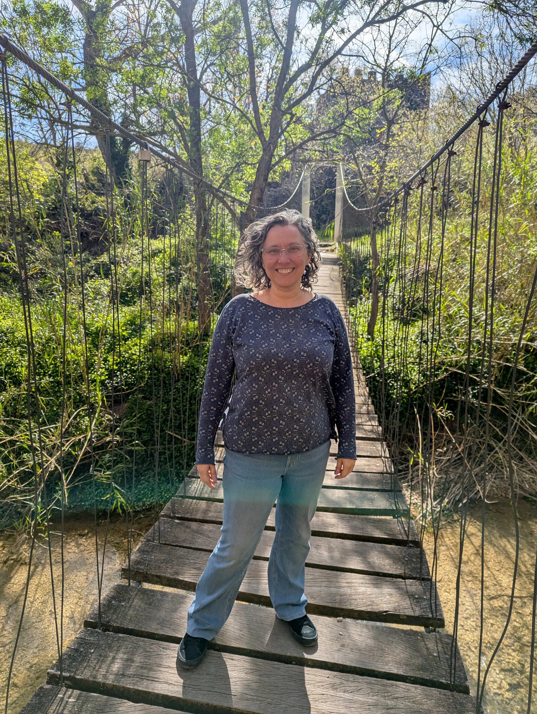

Contacte

A vegades fer el primer pas no és fàcil.
Si estàs passant per un moment difícil o simplement necessites comprendre millor el que estàs vivint, et pots posar en contacte amb mi i ho comentem amb calma.
La primera conversa (15 minuts) és gratuïta i sense compromís.
També em pots contactar directament: